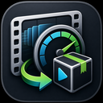

Target frame rates
Convert input videos to a selected output FPS for fixed-rate playback requirements.
Windows video FPS conversion
Convert video files to a defined frame rate, process batches, and prepare MediaPackage output. Current release: 0.1.0.3.

Convert input videos to a selected output FPS for fixed-rate playback requirements.
Queue and convert multiple files without repeating the same settings for each video.
Use bundled FFmpeg tools so conversion can run on the local Windows machine.
Run single-file and folder-batch conversions from cmd or PowerShell with visible logs and exit codes.
Single-file conversion uses source and target files. Add --no-gui to run in the background without displaying a GUI.
NewFPSConverter.exe --source "input.mp4" --target "output.mpkg" --frames-per-second 30 --no-gui
Batch conversion uses source and target folders.
NewFPSConverter.exe --batch --source-dir "C:\Videos\Input" --target-dir "C:\Videos\Output" --frames-per-second 30 --no-gui
Build the self-contained Windows desktop application with the .NET SDK:
dotnet publish FramerateConverter\NewFPSConverter.csproj -c Release -r win-x64 --self-contained true
Use Inno Setup with installer.iss to create the Windows installer.